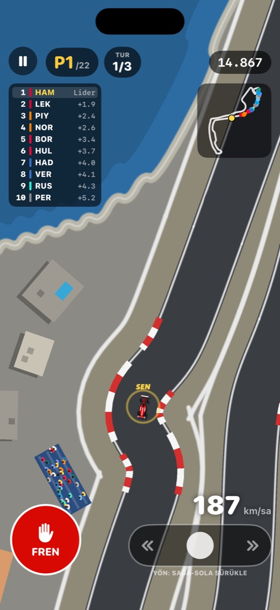
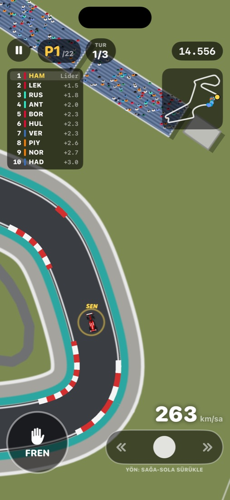
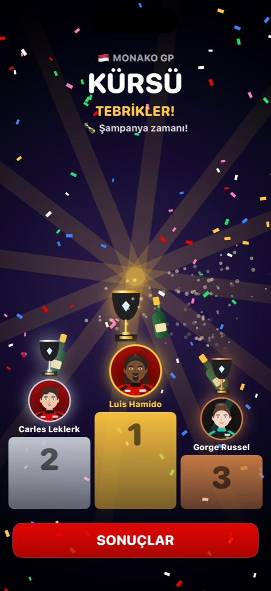
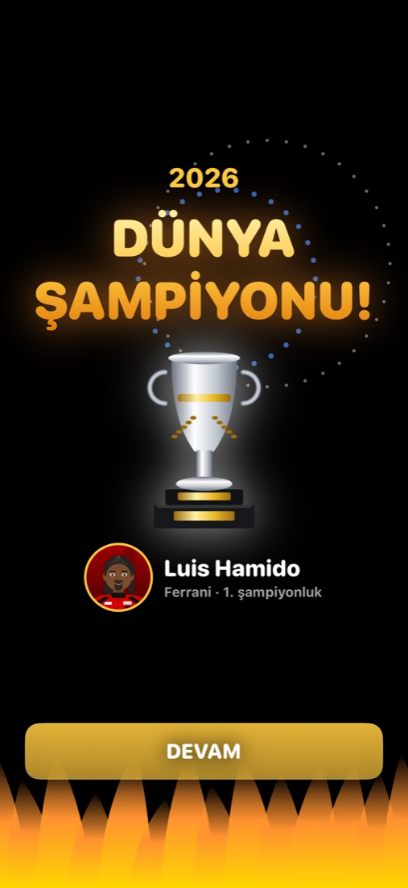
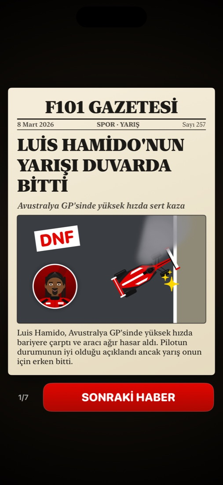

Oyun
Bir yarış haftasonu, baştan sona
Sıralama, start, yarış, kürsü ve ertesi günün gazete manşetleri. Hepsi tek elle oynanır.
Tek tur sıralama
Uzun antrenman seansları yok. Tek bir hızlı tur atarsın ve start sıran belli olur.
Işıklarla start
Beş ışık tek tek yeşil yanar. Hepsi yandığında ekrana dokun. Erken dokunursan diskalifiye olursun!
Basit kontroller
Araç kendiliğinden hızlanır. Sağa sola kaydırarak direksiyonu çevirirsin, diğer parmağınla sol alttaki FREN düğmesine basarsın.
Gerçekçi riskler
Virajı çok sert dönersen spin atarsın. Sert temas kazaya, yüksek hızda bariyere girmek yarış dışı kalmaya yol açar. Rakipler de hata yapar.
Kupa dolabı
Her Grand Prix'nin kendine özgü kupası var. Kürsüde şampanya patlat, dolabındaki kilitli kupaları tek tek aç.
Gazete ve istatistikler
Her yarıştan sonra manşetler çıkar: galibiyetler, kazalar, şampiyonluk yarışı. Ayrıntılı kariyer ve pist istatistiklerini de takip edebilirsin.
Ekranlar
Oyundan görüntüler





Kariyer
Sezonlar geçer, efsaneler doğar
2026 ve 2027 sezonları gerçek takvimle oynanır; 2027'de İstanbul Park ile Türkiye GP de takvimde. Sonraki yıllarda her sezon yeni bir takvim çıkar. Pilotlar yaşlanır ve emekli olur, yerlerine genç yetenekler gelir.
Kendi pilotunu yarat
Takımını seç, yerine geçeceğin pilotu belirle, görünüşünü, adını ve yarış numaranı seç.
Şehrin simgeleriyle pistler
Pistler gerçek dünyadaki şekilleriyle yukarıdan görünür. Çevreleri de o şehrin simgeleriyle süslüdür: İstanbul'da Boğaz ve Kız Kulesi, Monako'da liman, Bakü'de eski şehir.
Game Center
Game Center ile giriş yaparsan kariyerlerin iCloud'a yedeklenir. Galibiyet, şampiyonluk ve kariyer puanında skor tablolarına girersin.
English
Career-mode racing for iPhone
Create your driver or replace one of 22 drivers, pick from 11 teams and race on 27 real-world circuits. One-lap qualifying, light-based starts, simple drag-to-steer controls, a podium and champagne celebration, a trophy for every Grand Prix, newspaper headlines and Game Center leaderboards. For iPhone with iOS 16 or later.